Smile with Sunrise: healthy smiles, stronger community
A brand identity for a family dental clinic in Hastings Sunrise, East Vancouver, built on the idea that oral care should be gentle, accessible, and rooted in the neighbourhood. Everything flows from that, including the monthly Smile Check walk in events and the way the clinic speaks to patients of every age.
Understanding the community
The brand was grounded in personas drawn from the clinic's real audience: caring parents, independent seniors, curious kids, and busy local business owners. Each group arrives with different needs around trust, clarity, and comfort, and the brand had to hold all of them at once.
A mind map around smiles, sunrise, dental care, and community shaped everything that followed, including the tagline, the logo, the color direction, and the tone of voice.
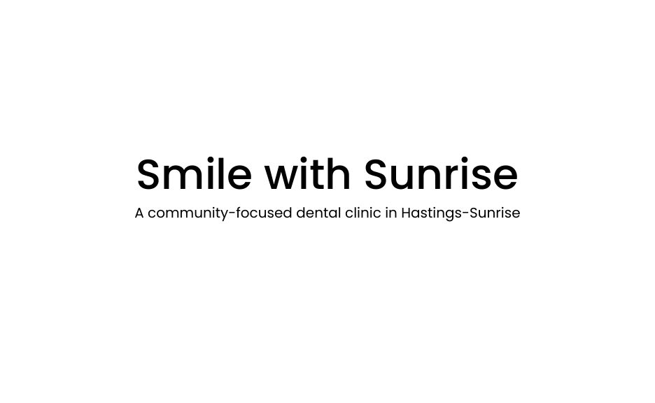
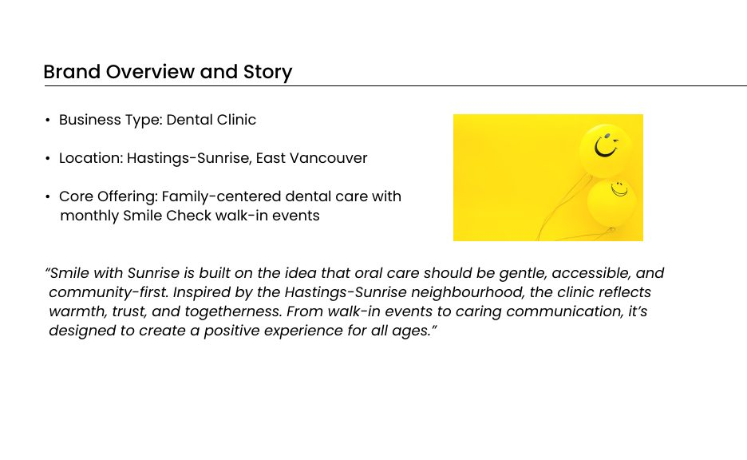
A warm, trustworthy identity
Warm orange carries optimism and community. Soft sky blue brings trust and cleanliness. The logo combines an orange heart for compassion, a blue tooth that presents dental care without intimidation, and radiating sunrise lines for the idea of starting every day with a healthy smile. Poppins keeps the type modern, friendly, and readable for all ages.
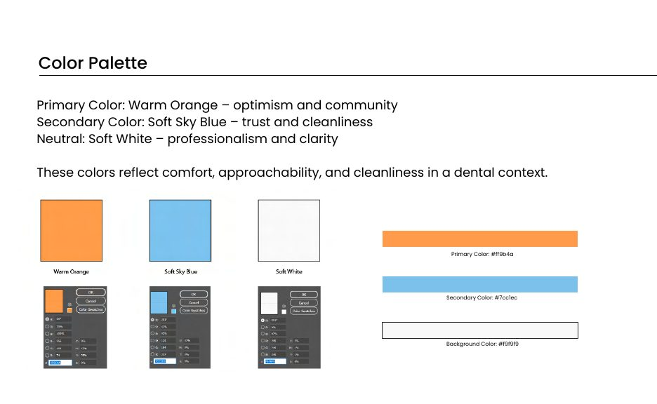
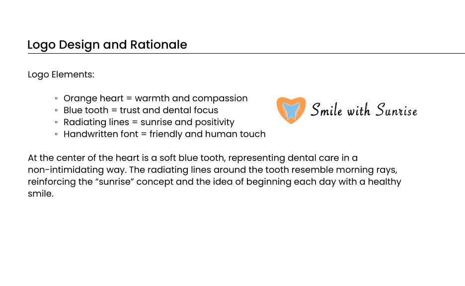
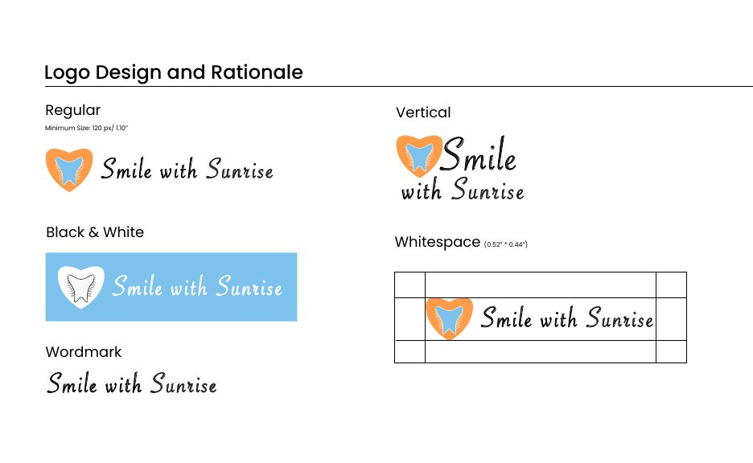
Rules that keep it consistent
The guidelines cover what to do with the logo and what to avoid, minimum sizes, whitespace, and a brand architecture that lets programs like Kids and Seniors sit under one identity rather than fragmenting it.
From there the system extends into everything the clinic hands to a patient: letterhead, envelope, business card, a full favicon set, a promotional kit, and the campaign material for the grand opening.
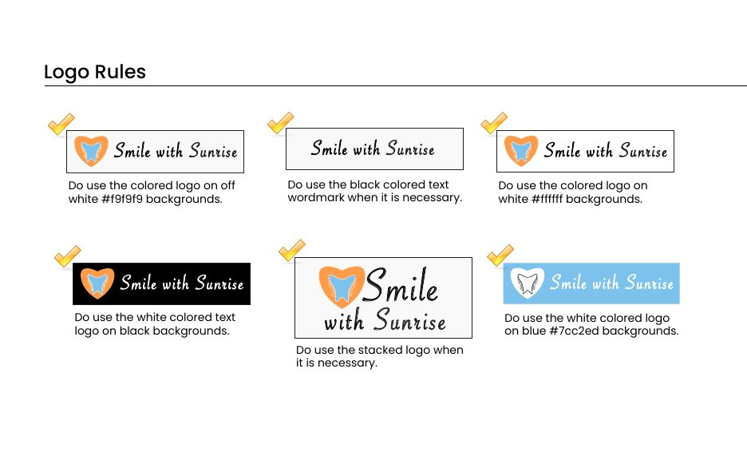
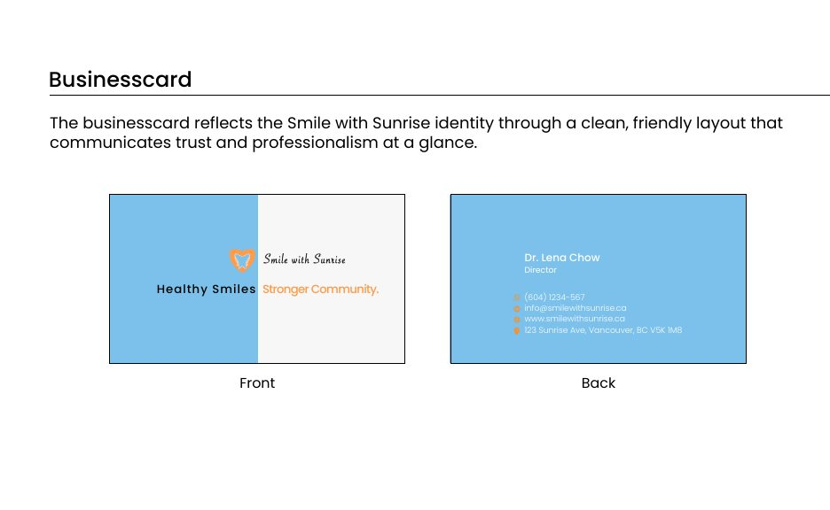
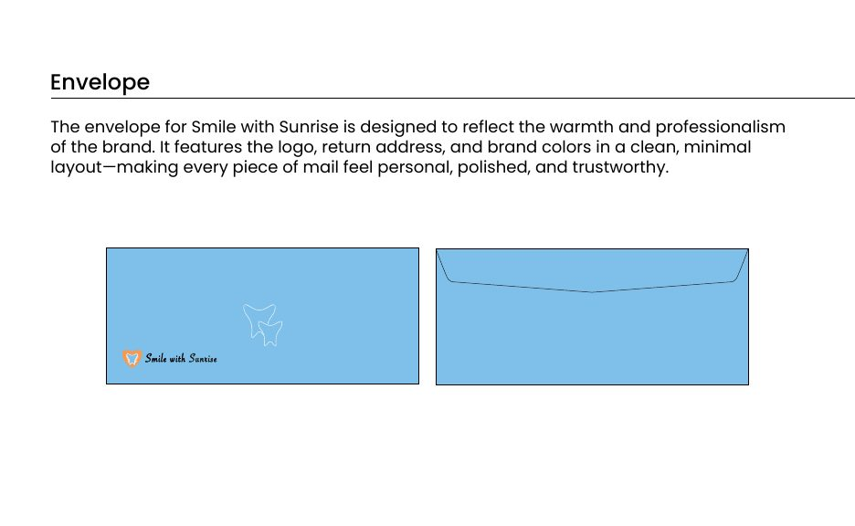
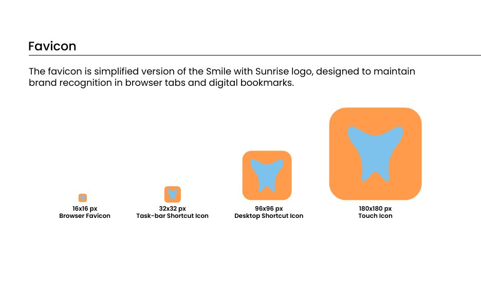
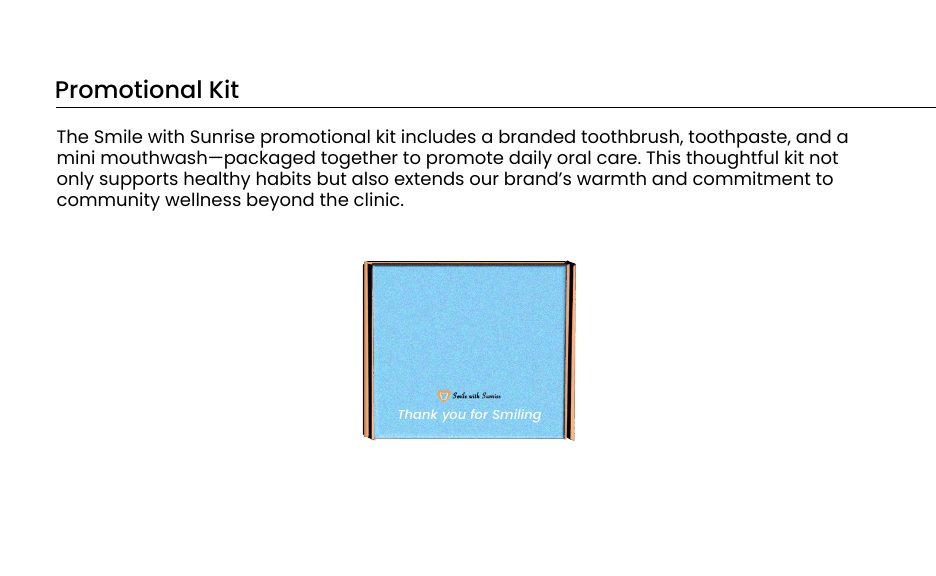
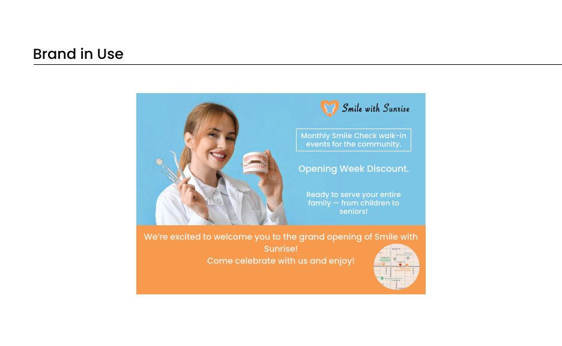